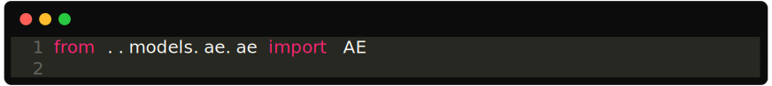

Experiments are written in restricted python. Meaning it’s python but with some limitations that will keep your mate project tidy. The following statements are not supported in a Mate experiment:
train or test).
You should only import from the root of a module.
For example, this is not a valid import:
And this is instead valid:
A mate experiment, although a subset of python, is just a configuration file where you should put all your hyperparameters. It’s meant to be where you import all your modules and organize them together to run your experiment. Defining loops and functions here would imply that you can skip organizing your project into modules and do everything in this file, thus losing all the attractive properties you get from modularity.
If you’re tempted to write functions or loops, maybe you should create a new module.
In your experiment, you usually want to import the mate module,
like so:
This module contains variables and functions that are useful to run your
experiment. For example, the mate.command contains the command
sent to the experiment (usually train or test). And
mate.result(...) allows you to save results of your experiments.
Check out its doc page.
You should create a new experiment for each different configuration you want to run. For example, if you want to run an experiment with a different learning rate, you should create a new experiment. This will keep your experiments organized and easy to find.
Below you can find an example of a valid mate experiment: